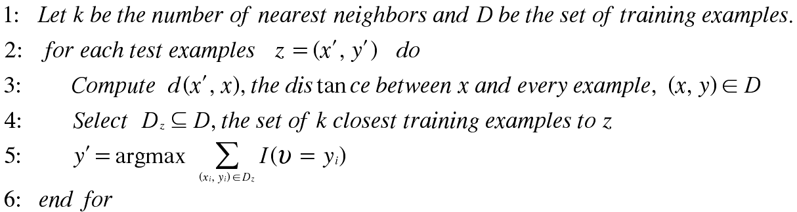

The stragetgy that the Nearest Neighbor is different from Rule Based Classifiers. Rule based classifiers are eager learnes because they are designed to learn a model that maps the input attributes to the class label as soon as the training data is available. Nearest Neighbor Classifiers are different because they delay the process of modeling the training data until it is needed ot classify the test examples. Techniques that employ this strategy are known as lazy learnings. A Nearest-neighbor classifier represents each example as a data point in d-dimensional space, where d is athe nubmer of attributes. Given a test example, we compute it's proximity ot the rest of the databoints in the training set, usning on of the proximity measurements.
Nearest-Neighbor Classification is a poart of a more general technique known as instance- based learning, which uses psecific training instances to make predictions without having to maintain an abstraction defived from the data. Due to this startegy of classification, the nearest neighbor is very suseptible to noise and can often produce the wrong results.
This is the algorithm for the K-Nearest Neighbor Classification
 * There is not training required because the model is used as a lazy learner instead of a abstraction to the test data
* With lack of noise, the algorithm can be quite accurate
* with small amounts of test data, and largea amoutns of training data, alogrithm become quite accurate.
* Because of the lack of calculations in the training data, classifying the test data can be expensive
* Depending on the value of K (in the K-nearest Neighobr) the value might change < br>
* Very suseptible to noise
* Very Suspetible to overfitting
* Depending on the value of K the answers might vary
* Depending on the distance algorithm the answers might be wrong.